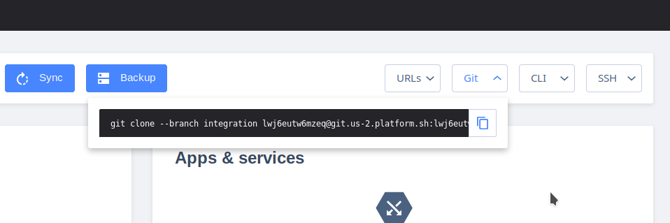
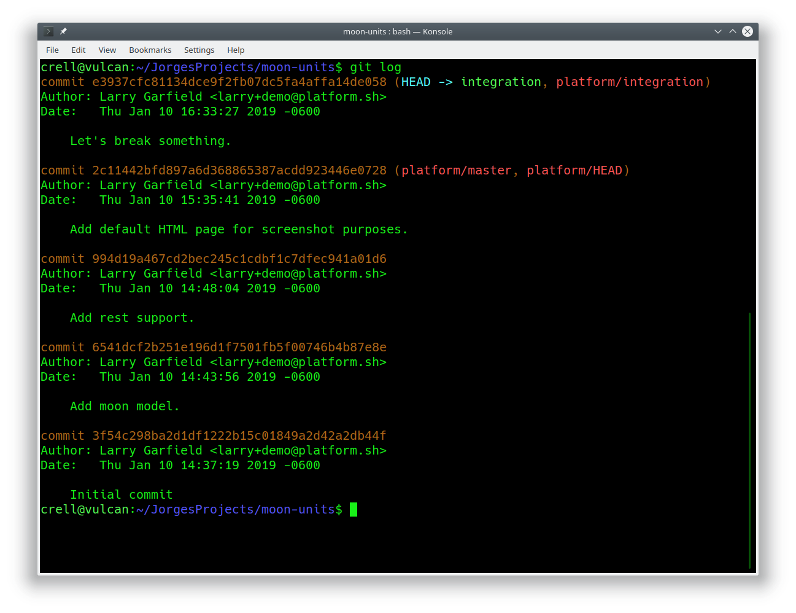
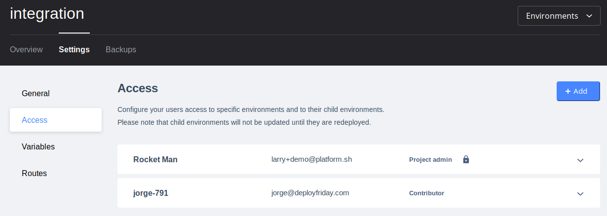
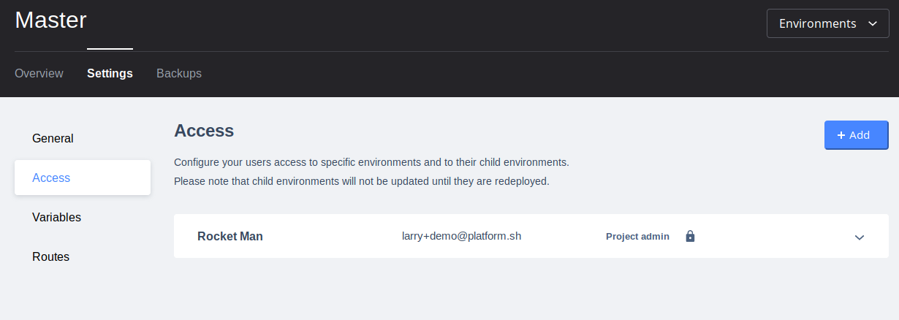

I need to know exactly what happened on my site and when.
Size test, 104x20.
Another line

All changes to code happen through Git.
Sometimes users commit broken code. But if they do...

There's no secret. It's right there in the Git log.
Who, When, and Where.
The server is read-only. No one can "fix it live" and forget about it.
That also means even if a site is compromised, the code can't be.

But don't worry.
While this user can commit to the integration branch...

They can't merge it to master without a review.
No one likes broken code, even on Fridays.
I did a dumb on this one and took the pictures with the wrong user. It will need to get redone.
Good enough to show the outline for now.
Problem: "I need to know exactly what happened to the site's code, and when."
Script
Show UI, check out a branch locally.
Make a change to a file that is obviously wrong.
Git commit.
Overlay: "All changes go through Git, and git tracks changes."
Push, show build.
Crossfade: Another user checks out the branch.
Run git log.
Highlight (zoom, circle, something) the commit message and name.
Overlay: "There's the culprit..."
SSH into environment.
Open the same code file in an editor (nano, vim, etc.)
Make change, try to save.
Get read-only error from editor.
Overlay: All containers are read-only; they can't be hacked from the outside, and no live edits are possible without going through Git.
Overlay: Fortunately this was all on a branch, and Jim can't push to production anyway.
Show Jim pushing to master, getting Error.
Shows
Auditing
Build code on git push
Read only containers
Users with permissions